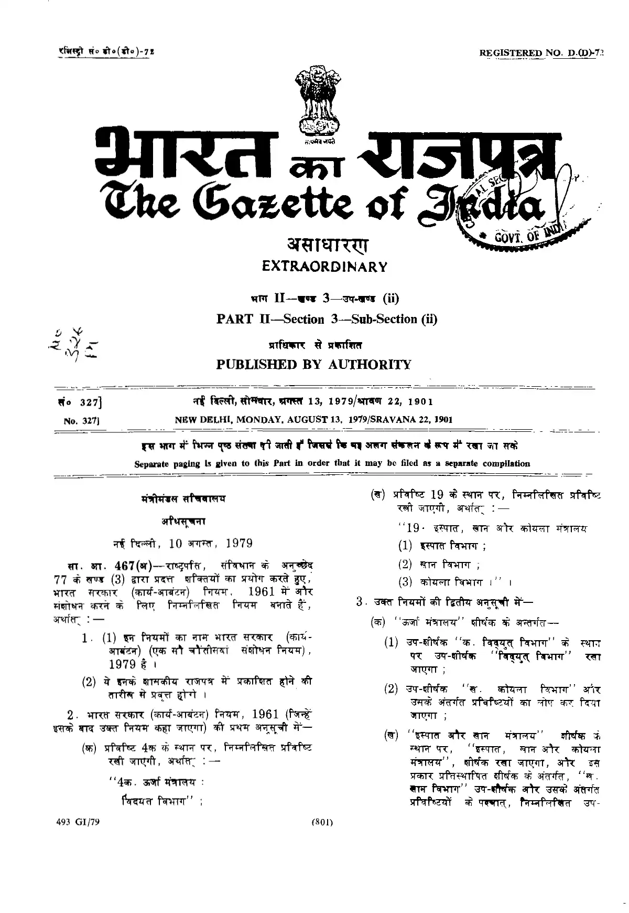
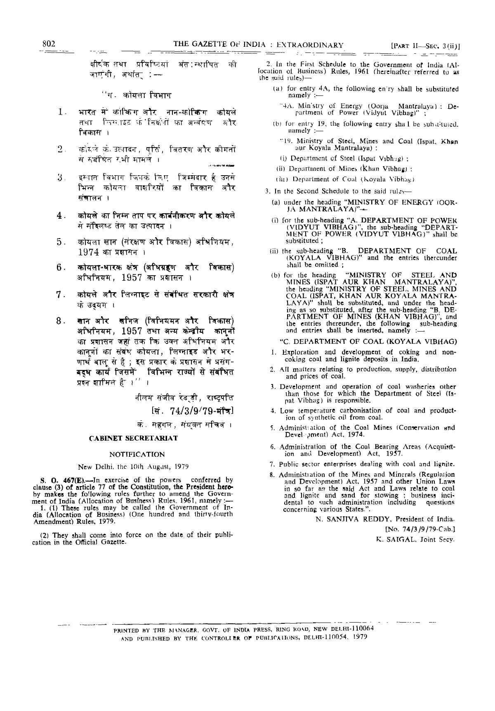

Amendment #134 (S.O. 467(E), 1979)
6 changes: 2 to the First Schedule, 4 to the Second Schedule. 6 applied
What it did to the ministries
- moved8 subjects move from Ministry of Energy to Ministry of Steel, Mines and Coal change 1, 2, 3, 4, 5, 6 · histories: Energy, Steel and Mines
- renamedMinistry of Steel and Mines is renamed Ministry of Steel, Mines and Coal change 2, 5, 6 · histories: Steel and Mines
The order, page by page
Page 1 of 2

Page 2 of 2

123456Schedule 1 › entry 4A
- 4A. Ministry of Energy
- Department of Power
applied at schedule 1 › ministry 4A in the Rules after #134
Schedule 1 › entry 19
- 19. Ministry of Steel, Mines and Coal
- i. Department of Steel (Ispat Vibhug)
- ii. Department of Mines
- iii. Department of Coul
applied at schedule 1 › ministry 19 in the Rules after #134
Schedule 2 › MINISTRY OF ENERGY › DEPARTMENT OF POWEK
- DEPART- MENT OF POWER
applied at schedule 2 › ministry MINISTRY OF ENERGY (0ORJA MANTRALAYA) › department A in the Rules after #134
states inferred loose
Schedule 2 › MINISTRY OF ENERGY › DEPARTMENT OF COAL
applied at schedule 2 › ministry MINISTRY OF ENERGY (0ORJA MANTRALAYA) › department B in the Rules after #134
Schedule 2 › MINISTRY OF STEEL AND MINES
- MINISTRY OF STEEL, MINES AND COAL (ISPAT, KHAN AUR KOYALA MANTRA- LAYA)
applied at schedule 2 › ministry MINISTRY OF STEEL, MINES AND COAL (ISPAT, KHAN AUR KOYALA MANTRA- LAYA) in the Rules after #134
after Schedule 2 › MINISTRY OF STEEL, MINES AND COAL › DEPARTMENT OF MINES
- C. DEPARTMENT OF COAL
- 1. Exploration and development of coking and noncoking coal and lignite deposits in India.
- 2. All malters relating to production, supply, distribution and prices of coal.
- 3. Development and operation of coal washeries other than those for which the Department of Steel (Tspat Vibhag) is responsible.
- 4. Low temperature carbonisation of coal and production of synthetic oil from coal.
- 5. Administation of the Coal Mines (Conservation and Develpment) Act, 1974.
and 3 more
- 6. Administration of the Coal Bearing Areas (Acquisition and Development) Act, 1957.
- 7. Public sector enterprises dealing with coal and lignite.
- 8. Administration of the Mines and Minerals (Regulation and Development) Act, 1957 and other Union Laws in so far as the said Act and Laws relate to coal and lignite and sand for stowing business incidental to such administration including questions concerning various States.
applied at schedule 2 › ministry MINISTRY OF STEEL, MINES AND COAL (ISPAT, KHAN AUR KOYALA MANTRA- LAYA) › department C in the Rules after #134
How this document was read
Edits to the reading
| Date | By | Edit | Before → after |
|---|---|---|---|
| 21 November 2026 | claude | word corrected |
Changes placed by an inference rule
| Change | Rule | Status | What |
|---|---|---|---|
| 3 | loose | accepted | change 3: department DEPARTMENT OF POWEK taken for department DEPARTMENT OF POWER(VI DYUT VI BHAG), named loosely |
From the Government of India (Allocation of Business) Rules, 1961 and their amendments, as published by the Cabinet Secretariat (cabsec.gov.in), read by orgpedia. The readings of the older scanned gazettes have known gaps.